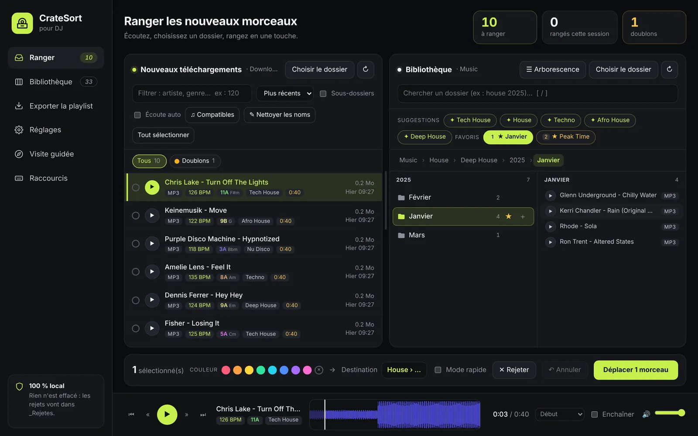
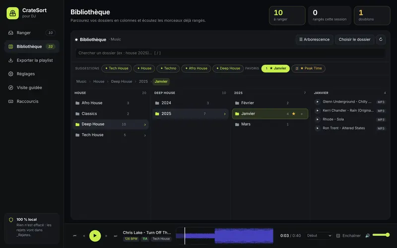

Écoute au drop
Forme d’onde cliquable, détection automatique du drop (D), départ au drop et enchaînement des morceaux.
CrateSort vous fait écouter vos derniers téléchargements au drop, repère le BPM, la tonalité et les doublons, puis les range dans votre bibliothèque en une touche. Tout se passe sur votre ordinateur.
Mac (puce Apple et Intel) et Windows 10 / 11.
Une interface sombre, lisible en soirée comme au studio, avec vos couleurs.

Écoutez à gauche, choisissez le dossier à droite, rangez en une touche.
CrateSort se concentre sur une chose : faire passer vos nouveaux morceaux du dossier Téléchargements au bon dossier de votre bibliothèque.
Forme d’onde cliquable, détection automatique du drop (D), départ au drop et enchaînement des morceaux.
Entrée pour déplacer, Maj+1…9 vers vos favoris, Suppr pour écarter, Ctrl+Z pour annuler.
Parcourez vos dossiers comme dans le Finder, avec fil d’Ariane et colonnes réglables à la largeur que vous voulez.
Lus dans les tags ou estimés à l’écoute, avec la tonalité en notation Camelot (8A, 11B…) pour le mix harmonique.
Touche H : seuls les morceaux qui se mixent avec la sélection restent (tonalité voisine, BPM à ±6 %).
CrateSort signale les morceaux déjà présents dans votre bibliothèque avant que vous ne les rangiez une deuxième fois.
« Artiste - Titre » en un clic : sites, « FREE DOWNLOAD » et numéros de piste disparaissent des noms de fichiers.
Aucun fichier ne quitte votre ordinateur. Rien n’est effacé : les rejets vont dans _Rejetes, tout s’annule.
Le dossier où arrivent vos sons, et la racine de votre bibliothèque. CrateSort s’en souvient.
↓ pour passer au morceau suivant : il démarre directement au drop, avec BPM et tonalité affichés.
Maj+1…9 envoie le morceau dans un de vos dossiers favoris. Le suivant se lance tout seul.
Vous avez rangé 20 morceaux sur 100 et la soirée commence dans un quart d’heure ? Un bouton suffira pour envoyer ce qui est rangé dans Serato, et vous continuerez plus tard.

Oui. CrateSort s’installe sur Mac (puce Apple et Intel, macOS 10.13 ou plus récent) et sur PC Windows 10 et 11. Il n’existe pas de version en ligne : l’application travaille directement sur les dossiers de votre ordinateur.
CrateSort n’est pas encore signé par Apple ou Microsoft. Sur Mac, ouvrez l’app une fois, cliquez sur « Terminé », puis Réglages Système → Confidentialité et sécurité → « Ouvrir quand même ». Sur Windows, cliquez sur « Informations complémentaires » → « Exécuter quand même ». Cette étape n’est à faire qu’une seule fois.
Non. Tout se passe sur votre ordinateur : CrateSort lit et déplace vos fichiers localement. La seule connexion sert à vérifier s’il existe une nouvelle version, et vous pouvez la désactiver dans les réglages.
CrateSort ne supprime rien. Les morceaux écartés sont déplacés dans un dossier _Rejetes, chaque déplacement peut être annulé avec Ctrl/⌘+Z, et un fichier n’est jamais écrasé.
CrateSort range vos fichiers dans vos dossiers, que votre logiciel de mix lit ensuite. Vous pouvez aussi exporter la liste des morceaux rangés en playlist .m3u8 ou .csv. Une mise à jour automatique de la bibliothèque Serato en un clic est en préparation.
À chaque ouverture, CrateSort vérifie s’il existe une nouvelle version. Sur Windows, elle se télécharge et s’installe toute seule au redémarrage. Sur Mac, CrateSort vous la signale et propose de télécharger la nouvelle version.
Choisissez votre système. Les mises à jour arrivent ensuite automatiquement.